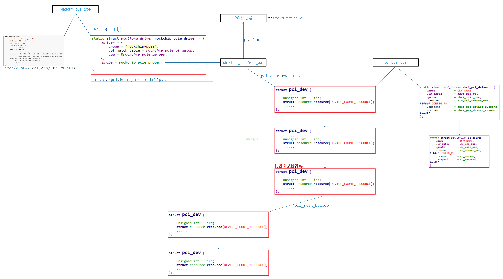
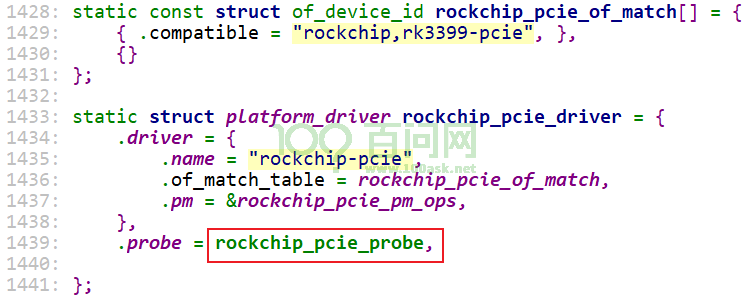
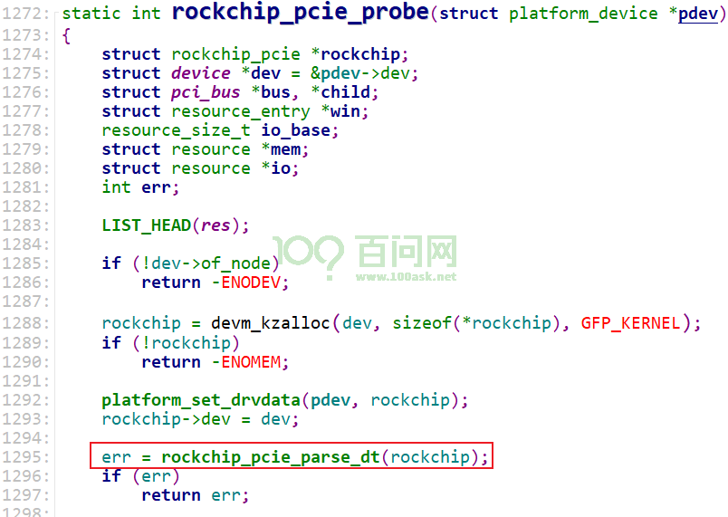
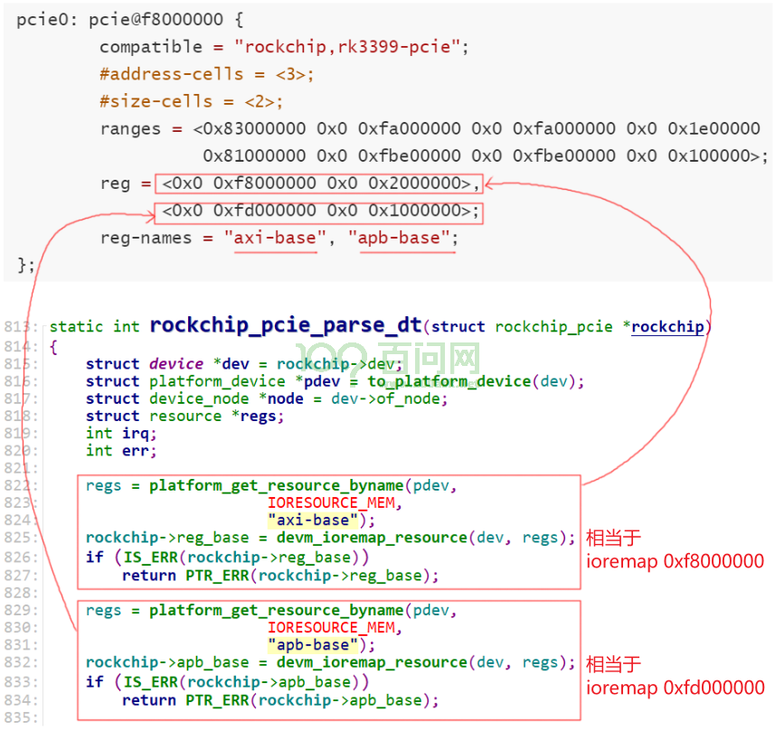
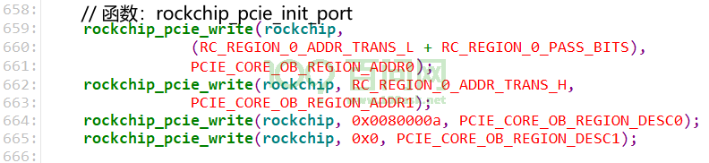
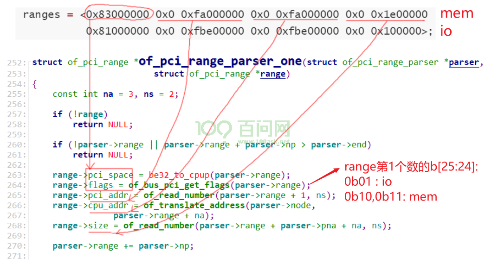
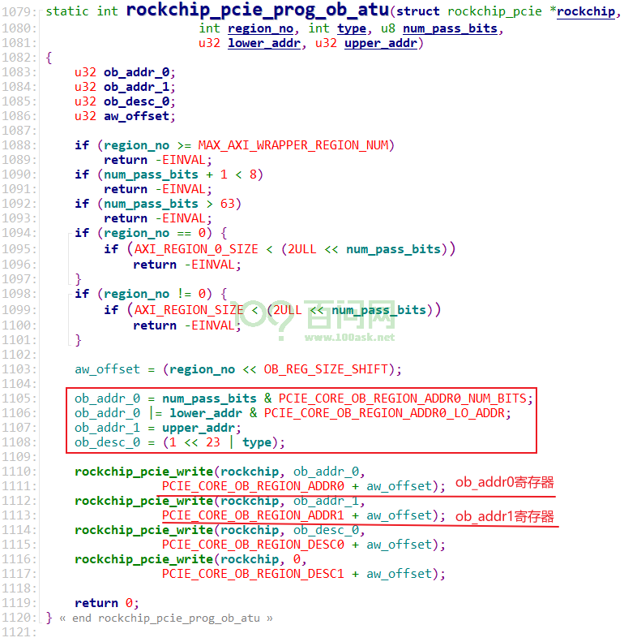

09_RK3399_PCIe_Host驱动分析_地址映射#
RK3399_PCIe_Host驱动分析_地址映射#
参考资料：
《PCI Express Technology 3.0》，Mike Jackson, Ravi Budruk; MindShare, Inc.
《PCIe扫盲系列博文》，作者Felix，这是对《PCI Express Technology》的理解与翻译
《PCI EXPRESS体系结构导读 (王齐)》
《PCI Express_ Base Specification Revision 4.0 Version 0.3 ( PDFDrive )》
《NCB-PCI_Express_Base_5.0r1.0-2019-05-22》
开发板资料：
https://wiki.t-firefly.com/zh_CN/ROC-RK3399-PC-PLUS/
本课程分析的文件：
linux-4.4_rk3399\drivers\pci\host\pcie-rockchip.c
1. PCI驱动框架#

2. Host驱动程序速览#
怎么找到驱动？
在内核目录下根据芯片名字找到文件：
drivers\pci\host\pcie-rockchip.c看到如下代码：
static const struct of_device_id rockchip_pcie_of_match[] = { { .compatible = "rockchip,rk3399-pcie", }, {} };
在内核
arch/arm64/boot/dts下搜：grep "rockchip,rk3399-pcie" * -nr找到设备树文件：
arch/arm64/boot/dts/rk3399.dtsi，代码如下：pcie0: pcie@f8000000 { compatible = "rockchip,rk3399-pcie"; #address-cells = <3>; #size-cells = <2>; aspm-no-l0s; clocks = <&cru ACLK_PCIE>, <&cru ACLK_PERF_PCIE>, <&cru PCLK_PCIE>, <&cru SCLK_PCIE_PM>; clock-names = "aclk", "aclk-perf", "hclk", "pm"; bus-range = <0x0 0x1f>; max-link-speed = <1>; linux,pci-domain = <0>; msi-map = <0x0 &its 0x0 0x1000>; interrupts = <GIC_SPI 49 IRQ_TYPE_LEVEL_HIGH 0>, <GIC_SPI 50 IRQ_TYPE_LEVEL_HIGH 0>, <GIC_SPI 51 IRQ_TYPE_LEVEL_HIGH 0>; interrupt-names = "sys", "legacy", "client"; #interrupt-cells = <1>; interrupt-map-mask = <0 0 0 7>; interrupt-map = <0 0 0 1 &pcie0_intc 0>, <0 0 0 2 &pcie0_intc 1>, <0 0 0 3 &pcie0_intc 2>, <0 0 0 4 &pcie0_intc 3>; phys = <&pcie_phy>; phy-names = "pcie-phy"; ranges = <0x83000000 0x0 0xfa000000 0x0 0xfa000000 0x0 0x1e00000 0x81000000 0x0 0xfbe00000 0x0 0xfbe00000 0x0 0x100000>; reg = <0x0 0xf8000000 0x0 0x2000000>, <0x0 0xfd000000 0x0 0x1000000>; reg-names = "axi-base", "apb-base"; resets = <&cru SRST_PCIE_CORE>, <&cru SRST_PCIE_MGMT>, <&cru SRST_PCIE_MGMT_STICKY>, <&cru SRST_PCIE_PIPE>, <&cru SRST_PCIE_PM>, <&cru SRST_P_PCIE>, <&cru SRST_A_PCIE>; reset-names = "core", "mgmt", "mgmt-sticky", "pipe", "pm", "pclk", "aclk"; status = "disabled"; pcie0_intc: interrupt-controller { interrupt-controller; #address-cells = <0>; #interrupt-cells = <1>; }; };
所谓Host，就是PCIe控制器，它的驱动做什么？
解析设备树，根据设备树确定：寄存器地址、CPU空间地址、PCI空间地址、中断信息
记录资源：CPU空间地址、PCI空间地址
初始化PCIe控制器本身，建立CPU地址和PCI地址的映射
扫描识别当前PCIe控制器下面的PCIe设备
驱动文件drivers\pci\host\pcie-rockchip.c中注册了一个platform_driver，从它的probe函数开始分析：

3. 设备树文件解析#
RK3399访问PCIe控制器时，CPU地址空间可以分为：
Client Register Set：地址范围 0xFD000000~0xFD7FFFFF，比如选择PCIe协议的版本(Gen1/Gen2)、电源控制等
Core Register Set ：地址范围 0xFD800000~0xFDFFFFFF，所谓核心寄存器就是用来进行设置地址映射的寄存器等
Region 0：0xF8000000~0xF9FFFFFF , 32MB，用于访问外接的PCIe设备的配置空间
Region 1：0xFA000000~0xFA0FFFFF，1MB，用于地址转换
Region 2：0xFA100000~0xFA1FFFFF，1MB，用于地址转换
……
Region 32：0xFBF00000~0xFBFFFFFF，1MB，用于地址转换
其中Region 0大小为32MB，Region1~31大小分别为1MB。
在设备树里都有体现(下列代码中，其他信息省略了)：
reg属性里的0xf8000000：Region 0的地址
reg属性里的0xfd000000：PCIe控制器内部寄存器的地址
Client Register Set：地址范围 0xFD000000~0xFD7FFFFF
Core Register Set ：地址范围 0xFD800000~0xFDFFFFFF
ranges属性里
第1个0xfa000000：Region1~30的CPU地址空间首地址，用于内存读写
第2个0xfa000000：Region1~30的PCI地址空间首地址，用于内存读写
第1个0xfbe00000：Region31的CPU地址空间首地址，用于IO读写
第2个0xfbe00000：Region31的PCI地址空间首地址，用于IO读写
Region32呢？在.c文件里用作”消息TLP”
pcie0: pcie@f8000000 {
compatible = "rockchip,rk3399-pcie";
#address-cells = <3>;
#size-cells = <2>;
ranges = <0x83000000 0x0 0xfa000000 0x0 0xfa000000 0x0 0x1e00000
0x81000000 0x0 0xfbe00000 0x0 0xfbe00000 0x0 0x100000>;
reg = <0x0 0xf8000000 0x0 0x2000000>,
<0x0 0xfd000000 0x0 0x1000000>;
reg-names = "axi-base", "apb-base";
};
4. 设备树相关驱动程序分析#
代码入口如下：

4.1 Region0和寄存器地址#

0xF8000000就是RK3399的Region0地址，用于 ECAM：PCIe ECAM介绍。
即：只写读写0xF8000000这段空间，就可以只写读写PCIe设备的配置空间。
0xFD000000即使RK3399 PCIe控制器本身的寄存器基地址。
Region0用与读写配置空间，它对应的寄存器要设置用于产生对应的TLP，函数调用关系如下：
rockchip_pcie_probe
err = rockchip_pcie_init_port(rockchip);

4.2 确定CPU/PCI地址空间#
在PCIe设备树里有一个属性ranges，它里面含有多个range，每个range描述了：
flags：是内存还是IO
PCIe地址
CPU地址
长度
先提前说一下怎么解析这些range，函数为for_each_of_pci_range，解析过程如下：

从probe函数开始分析，完整的代码流程如下：
rockchip_pcie_probe
resource_size_t io_base;
LIST_HEAD(res); // 资源链表
// 解析设备树获得PCI host bridge的资源(CPU地址空间、PCI地址空间、大小)
err = of_pci_get_host_bridge_resources(dev->of_node, 0, 0xff, &res, &io_base);
// 解析 bus-range
// 设备树里: bus-range = <0x0 0x1f>;
// 解析得到: bus_range->start= 0 ,
// bus_range->end = 0x1f,
// bus_range->flags = IORESOURCE_BUS;
// 放入前面的链表"LIST_HEAD(res)"
err = of_pci_parse_bus_range(dev, bus_range);
pci_add_resource(resources, bus_range);
// 解析 ranges
// 设备树里:
// ranges = <0x83000000 0x0 0xfa000000 0x0 0xfa000000 0x0 0x1e00000
// 0x81000000 0x0 0xfbe00000 0x0 0xfbe00000 0x0 0x100000>;
of_pci_range_parser_init
parser->range = of_get_property(node, "ranges", &rlen);
for_each_of_pci_range(&parser, &range) {// 解析range
// 把range转换为resource
// 第0个range
// range->pci_space = 0x83000000,
// range->flags = IORESOURCE_MEM,
// range->pci_addr = 0xfa000000,
// range->cpu_addr = 0xfa000000,
// range->size = 0x1e00000,
// 转换得到第0个res：
// res->flags = range->flags = IORESOURCE_MEM;
// res->start = range->cpu_addr = 0xfa000000;
// res->end = res->start + range->size - 1 = (0xfa000000+0x1e00000-1);
// ---------------------------------------------------------------
// 第1个range
// range->pci_space = 0x81000000,
// range->flags = IORESOURCE_IO,
// range->pci_addr = 0xfbe00000,
// range->cpu_addr = 0xfbe00000,
// range->size = 0x100000,
// 转换得到第1个res：
// res->flags = range->flags = IORESOURCE_MEM;
// res->start = range->cpu_addr = 0xfbe00000;
// res->end = res->start + range->size - 1 = (0xfbe00000+0x100000-1);
err = of_pci_range_to_resource(&range, dev, res);
// 在链表中增加resource
// 第0个resource：
// 注意第3个参数: offset = cpu_addr - pci_addr = 0xfa000000 - 0xfa000000 = 0
// 第1个resouce
// 注意第3个参数: offset = cpu_addr - pci_addr = 0xfbe00000 - 0xfbe00000 = 0
pci_add_resource_offset(resources, res, res->start - range.pci_addr);
}
/* Get the I/O and memory ranges from DT */
resource_list_for_each_entry(win, &res) {
rockchip->io_bus_addr = io->start - win->offset; // 0xfbe00000, cpu addr
rockchip->mem_bus_addr = mem->start - win->offset; // 0xfba00000, cpu addr
rockchip->root_bus_nr = win->res->start; // 0
}
bus = pci_scan_root_bus(&pdev->dev, 0, &rockchip_pcie_ops, rockchip, &res);
pci_bus_add_devices(bus);
4.3 建立CPU/PCI地址空间的映射#
调用关系如下：
rockchip_pcie_probe
err = rockchip_cfg_atu(rockchip);
/* MEM映射: Region1~30 */
for (reg_no = 0; reg_no < (rockchip->mem_size >> 20); reg_no++) {
err = rockchip_pcie_prog_ob_atu(rockchip, reg_no + 1,
AXI_WRAPPER_MEM_WRITE,
20 - 1,
rockchip->mem_bus_addr +
(reg_no << 20),
0);
if (err) {
dev_err(dev, "program RC mem outbound ATU failed\n");
return err;
}
}
/* IO映射: Region31 */
offset = rockchip->mem_size >> 20;
for (reg_no = 0; reg_no < (rockchip->io_size >> 20); reg_no++) {
err = rockchip_pcie_prog_ob_atu(rockchip,
reg_no + 1 + offset,
AXI_WRAPPER_IO_WRITE,
20 - 1,
rockchip->io_bus_addr +
(reg_no << 20),
0);
if (err) {
dev_err(dev, "program RC io outbound ATU failed\n");
return err;
}
}
/* 用于消息传输: Region32 */
rockchip_pcie_prog_ob_atu(rockchip, reg_no + 1 + offset,
AXI_WRAPPER_NOR_MSG,
20 - 1, 0, 0);
rockchip->msg_bus_addr = rockchip->mem_bus_addr +
((reg_no + offset) << 20);
MEM空间映射：
// rockchip->mem_bus_addr = 0xfa000000
// rockchip->mem_size = 0x1e00000
// 设置Region1、2、……30的映射关系
for (reg_no = 0; reg_no < (rockchip->mem_size >> 20); reg_no++) {
err = rockchip_pcie_prog_ob_atu(rockchip, reg_no + 1,
AXI_WRAPPER_MEM_WRITE,
20 - 1,
rockchip->mem_bus_addr +
(reg_no << 20),
0);
IO空间映射：
// rockchip->io_bus_addr = 0xfbe00000
// rockchip->io_size = 0x100000
// 设置Region31的映射关系
offset = rockchip->mem_size >> 20;
for (reg_no = 0; reg_no < (rockchip->io_size >> 20); reg_no++) {
err = rockchip_pcie_prog_ob_atu(rockchip,
reg_no + 1 + offset,
AXI_WRAPPER_IO_WRITE,
20 - 1,
rockchip->io_bus_addr +
(reg_no << 20),
0);
if (err) {
dev_err(dev, "program RC io outbound ATU failed\n");
return err;
}
}
Message空间映射：
/* Region32：assign message regions */
rockchip_pcie_prog_ob_atu(rockchip, reg_no + 1 + offset,
AXI_WRAPPER_NOR_MSG,
20 - 1, 0, 0);
rockchip->msg_bus_addr = rockchip->mem_bus_addr +
((reg_no + offset) << 20);
任何一个Region，都有对应的寄存器：

所谓建立CPU和PCI地址空间的映射，就是设置Region对应的寄存器，都是使用函数rockchip_pcie_prog_ob_atu：
